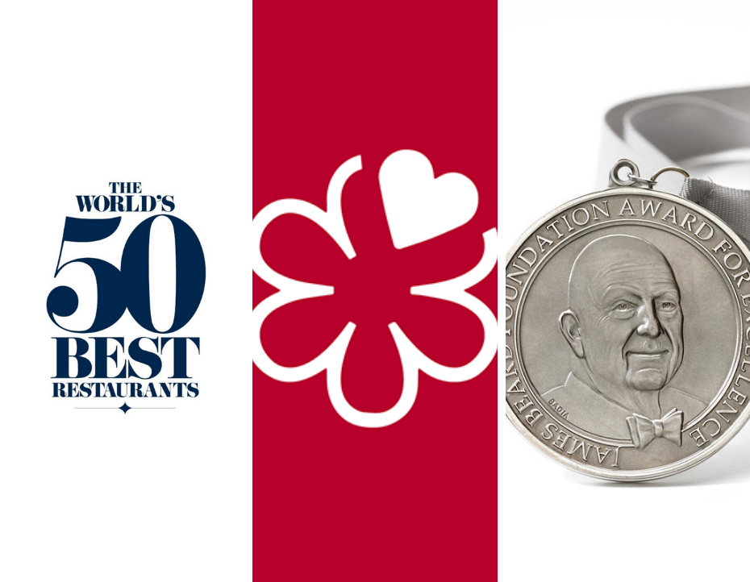
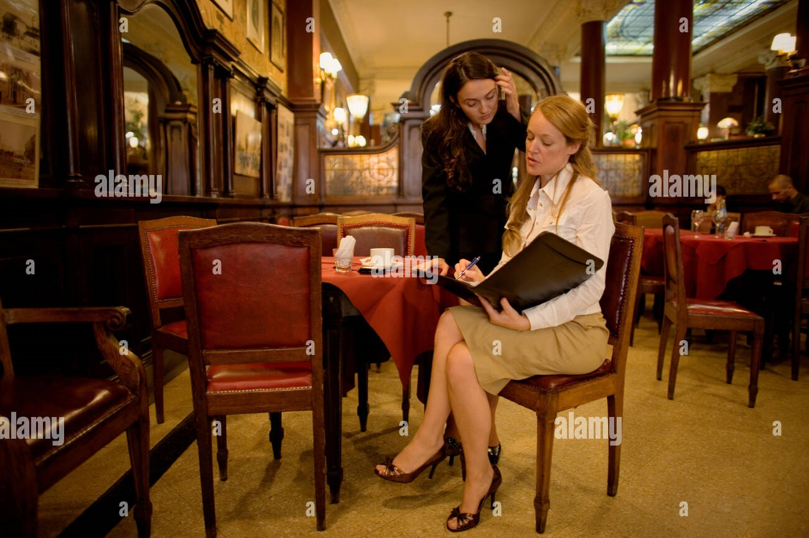

Nuestra Historia
Somos un restaurante de pasta fresca y otras especialidades italianas, en el cual hemos querido conservar la tradición y recetas de la verdadera cocina italiana.

Desde muy joven, Alfredo Dacrema se dedicó a crear momentos inolvidables para sus clientes. Atendió y manejó diferentes restaurantes y hoteles de Europa, hasta llegar a Mendoza a liderar el restaurante del Hotel Alférez Real, reinaugurado en 1950. Posteriormente, su espíritu empresarial lo impulsó a establecer su propio restaurante llamado Don Alfredo. Entre 1955 y 1983, Alfredo Dacrema entregó con amor, todo su conocimiento y tradición Italiana a los comensales Mendocinos.

Su pasión por el servicio y el buen comer, catalogó al Restaurante Don Alfredo como el mejor restaurante de comida internacional

Veinte años después, Ludmila, hija de Alfredo Dacrema, junto a Araceli Fernandez, decidieron rescatar las recetas, la cultura de servicio y el amor por la buena comida del Restaurante Don Alfredo. Con estos atributos nace el Restaurante Maral. Continuando con la tradición familiar, creando momentos inolvidables para sus clientes, con recetas artesanales de pastas originales y atención amable y profesional